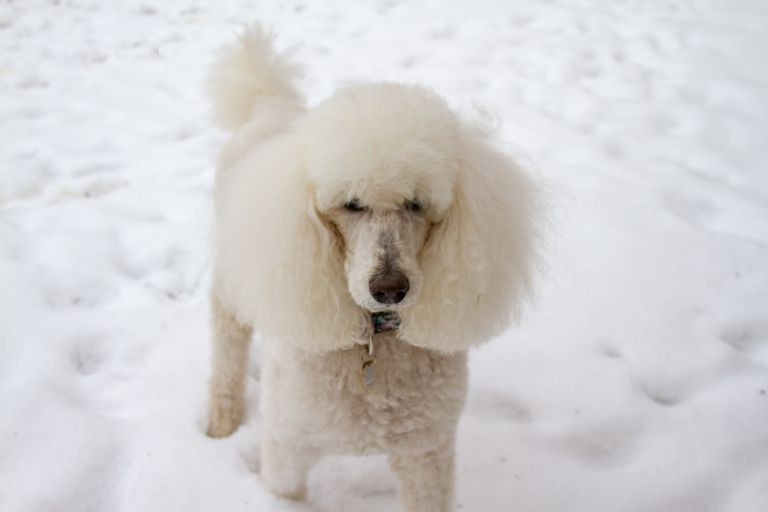
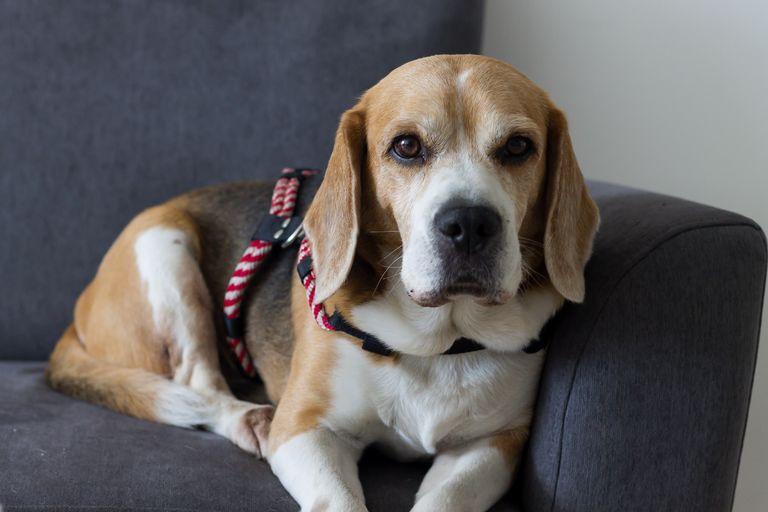
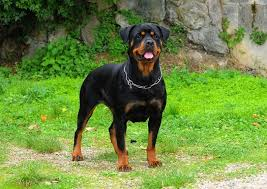
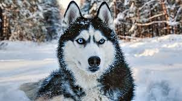

Bulldogs are friendly, courageous, and calm. As the AKC writes, "the Bulldog is a thick-set, low-slung, well-muscled bruiser whose 'sourmug' face is the universal symbol of courage and tenacity."
Poodles :

Poodles are active, proud, and smart. They come in three sizes: standard, miniature, or toy. Poodles can rock a variety of different clips.
Beagles:

Beagles are friendly, curious, and merry. They have big brown or hazel eyes and were formerly bred to hunt in packs.
Rottweilers:

Rottweilers are loyal, loving, and make for confident guardians. These dogs can weigh between 80 and 135 pounds and are very strong. They are characterized by a short black coat with smart rust markings and are born with a territorial instinct.
Siberian Huskey:

Not to be confused with Alaskan malamutes (or wolves), these hard-working dogs were built for long-distance running and harsh, cold climates. Perhaps their most striking feature, you may recognize them by their striking blue eyes.